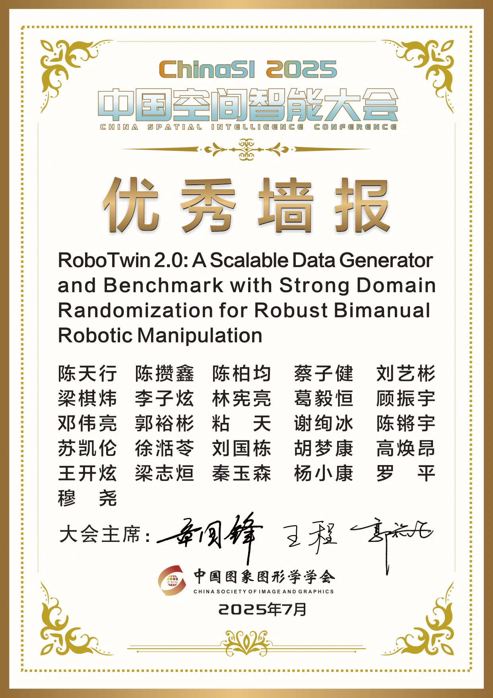
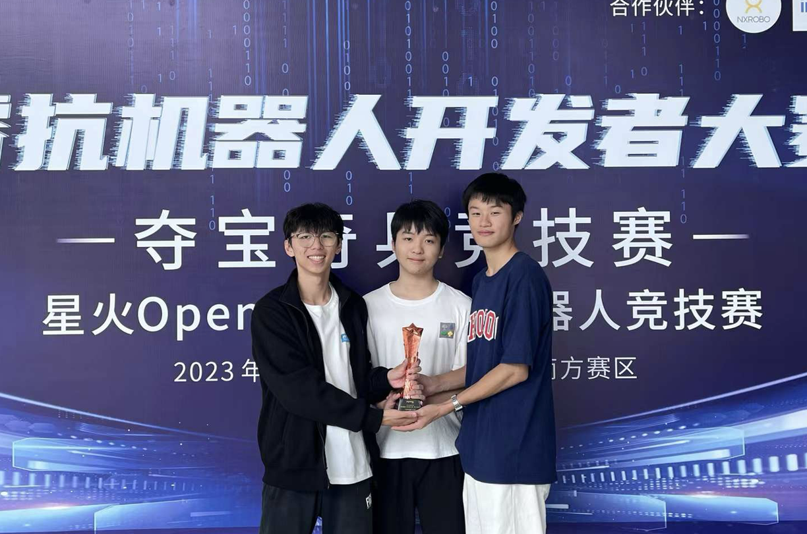
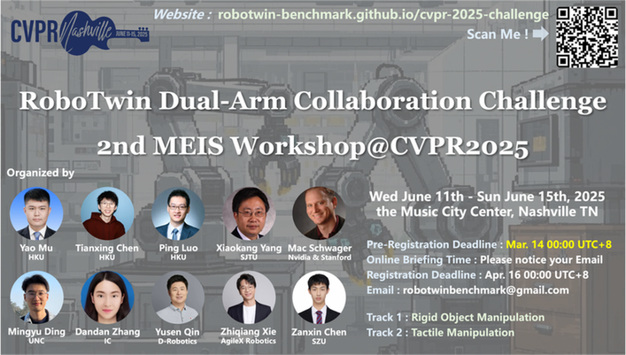
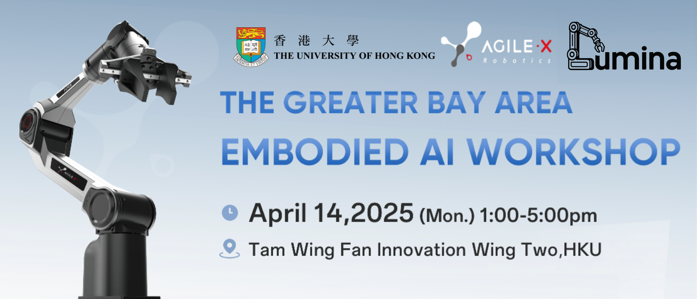

Tianxing CHEN (陈天行)

üéì Year-1 PhD Student @ HKU-MMLabü§ñ Embodied AI & Robotics ResearcherüéôÔ∏è Co-Founder of Lumina Embodied AI Community


|
|

Biography
I have won a silver medal in the ACM-ICPC regional competition and a national runner-up in the RAICOM robotics competition. I also received CCF Elite Collegiate Award (CCF优秀大学生, top 99 nationwide) and "Excellent Star of SZU (荔园卓越之星)" which was the recipient of the highest honor for undergraduate students at Shenzhen University (rk 2/30000).
My research interests mainly focus on Embodied AI, especially on Robotic Foundation Model, Manipulation Policy (VLA, Diffusion Policy) and Robot Data Synthesizer.
I am also a blogger and vlogger with over 10k followers at Rednote @ üéíTianxing Chen (Èô৩˰å).
News


- [07/2025] üéâ Interviewed by MIT Technical Review China („ÄäÈ∫ªÁúÅÁêÜÂ∑•ÁßëÊäÄËØÑËÆ∫„Äã‰∏≠ÂõΩ), "Next Gen" Series [Report] !
- [07/2025] üéâ RoboTwin 2.0 received Outstanding Poster at ChinaSI 2025 (Ranking 1st) üèÜ !
- [07/2025] üéâ Graduated with a bachelor's degree from Shenzhen University !
- [07/2025] We released RoboTwin Dual-Arm Collaboration Challenge Technical Report @ CVPR 2025 MEIS Workshop [arXiv] !
- [06/2025] We released RoboTwin 2.0 [Webpage] !
- [05/2025] üéâ My Rednote (Â∞èÁ∫¢‰π¶) has reached 10k followers !
- [05/2025] üéâ Text2World and HiAgent are accepted to ACL 2025 !
- [04/2025] üéâ My graduation thesis is graded A+ and selected as one of the university's top 100 outstanding theses. [Acknowledgements]
- [04/2025] üéâ CordViP is accepted to RSS 2025 !
- [04/2025] üéâ RoboTwin is selected as Highlight (13.5%) !
- [02/2025] üéâ 3 Papers (G3Flow, RoboTwin and DexHandDiff) are accepted to CVPR 2025 !
- [12/2024] Serving as an Organizer for the 2nd MEIS Workshop at CVPR 2025.
- [09/2024] üéâ RoboTwin (Early Version) received the Best Paper Award at the ECCV 2024 Workshop !
- [04/2024] üéâ One paper is accepted to ICARM 2024, which is my first paper üåπ !
- [04/2024] üéâ We won the National Gold Medal üèÖ, Provincial Runner-up üèÜ of China Collegiate Computing Contest !
- [01/2024] Joined Shanghai AI Laboratory as Intern Researcher. Started doing research on Robotics !
- [10/2023] üéâ I received the highest honor for undergraduate students at Shenzhen University, "Excellent Star of SZU", ranked 2nd among the 30,000 undergraduates in the school (top 0.0067%) ! [Report]
- [10/2023] üéâ I received CCF Elite Collegiate Award, which is awarded by China Computer Federation, to the top 99 students nationwide in 2023 ! [Report]
- [09/2023] Joined National Engineering laboratory for Big Data System Computing Technology as a Intern Researcher. Started doing research on RL !
- [08/2023] üéâ Our team won the National Runner-up üèÜ of RAICOM !
- [06/2023] I started to lead the SZU Algorithm Training Team !
- [01/2023] üéâ Our team (SZU_Tencent) won Silver Medal ü•à in 46th ICPC Asia, Hong Kong !
Education

|
MMLab, The University of Hong Kong
(HKU) PhD. Student @ MMLab-HKU,
supervised by Prof. Ping Luo.
Sep. 2025 - Jun. 2029 (expected)
|

|
Shenzhen University (SZU) B.Eng. (currently studying) in Computer
Science and Technology (Outstanding Class)
GPA 91.0 / 100, Excellent Star of SZU
(荔园卓越之星, top 0.0067%),
[Acknowledgements]
Sep. 2021 - Jul. 2025 |
Publications | [My Google Scholar]
|
|
RoboTwin 2.0: A Scalable
Data Generator and Benchmark with Strong Domain Randomization for
Robust Bimanual Robotic Manipulation 
Tianxing Chen*,
Zanxin Chen*, Baijun Chen*, Zijian
Cai*, Yibin Liu*, Qiwei Liang, Zixuan Li,
Xianliang Lin, Yiheng Ge, Zhenyu Gu, Weiliang Deng, Yubin Guo, Tian
Nian, Xuanbing Xie, Qiangyu Chen, Kailun Su, Tianling Xu, Guodong
Liu, Mengkang Hu, Huan-ang Gao, Kaixuan Wang, Zhixuan Liang, Yusen
Qin, Xiaokang Yang, Ping Luo†, Yao Mu†
Under Review
|

|
Benchmarking Generalizable
Bimanual Manipulation: RoboTwin Dual-Arm Collaboration Challenge at
CVPR 2025 MEIS Workshop
Tianxing Chen*,
Kaixuan Wang*, Zhaohui Yang*, Yuhao
Zhang*, Zanxin Chen*, Baijun Chen*,
Wanxi Dong*, Ziyuan Liu, Dong Chen, Tianshuo Yang, Haibao
Yu, Xiaokang Yang, Yusen Qin, Zhiqiang Xie, Yao Mu†, Ping
Luo†, and All Competition Volunteers and
Participants
Official Technical Report of RoboTwin
Dual-Arm Collaboration Challenge @ CVPR 2025 MEIS Workshop
|

|
AutoBio: A Simulation and
Benchmark for Robotic Automation in Digital Biology Laboratory
Zhiqian Lan, Yuxuan Jiang, Ruiqi Wang,
Xuanbing Xie, Rongkui Zhang, Yicheng Zhu, Peihang Li, Tianshuo Yang,
Tianxing Chen, Haoyu Gao, Xiaokang Yang, Xuelong Li,
Hongyuan Zhang, Yao Mu†, Ping Luo†
Under Review 2025
|

|
AVR: Active Vision-Driven
Robotic Precision Manipulation with Viewpoint and Focal Length
Optimization
Yushan Liu*, Shilong
Mu*, Xintao Chao, Zizhen Li, Yao Mu, Tianxing
Chen, Shoujie Li, Chuqiao Lyu, Xiao-Ping Zhang, Fellow,
IEEE, Wenbo Ding†
Under Review 2025
|

|
Text2World: Benchmarking
Large Language Models for Symbolic World Model Generation
Mengkang Hu*, Tianxing
Chen*, Yude Zou*, Yuheng Lei, Ming
Li, Qiguang Chen, Hongyuan Zhang, Wenqi Shao, Ping
Luo†
ACL 2025
(findings)
|

|
CordViP:
Correspondence-based Visuomotor Policy for Dexterous Manipulation in
Real-World
Yankai Fu*, Qiuxuan
Feng*, Ning Chen*, ZiChen Zhou, Mengzhen Liu,
Mingdong Wu, Tianxing Chen, Shanyu Rong, Jiaming Liu,
Hao Dong and Shanghang Zhang†
RSS 2025
|
|
|
Embodied-AI-Guide 
Embodied-AI-Guide-Contributors,
Lumina-Embodied-AI-Community, Tianxing Chen (as Project
Founder), ...
Github
Repository
An entry path into Embodied
AI and a summary of high - quality information in this field. The
goal is to help newcomers quickly build up their understanding and
get started in Embodied AI.
|

|
G3Flow: Generative 3D
Semantic Flow for Pose-aware and Generalizable Object Manipulation

Tianxing Chen*,
Yao Mu*, Zhixuan Liang*, Zanxin Chen, Shijia
Peng, Qiangyu Chen, Mingkun Xu, Ruizhen Hu, Hongyuan Zhang, Xuelong
Li, Ping Luo†
CVPR 2025
|

|
RoboTwin: Dual-Arm Robot
Benchmark with Generative Digital Twins
Yao Mu*, Tianxing
Chen*, Zanxin Chen*, Shijia
Peng*, Zeyu Gao, Zhixuan Liang, Qiaojun Yu, Yude Zou,
Mingkun Xu, Lunkai Lin, Zhiqiang Xie, Mingyu Ding and Ping
Luo†
CVPR 2025 (Highlight,
13.5%)
|

|
DexHandDiff:
Interaction-aware Diffusion Planning for Adaptive Dexterous
Manipulation
Zhixuan Liang, Yao Mu, Yixiao Wang,
Tianxing Chen, Wenqi Shao, Wei Zhan, Masayoshi
Tomizuka, Ping Luo† and Mingyu Ding
CVPR 2025
|

|
Articulated Object
Manipulation using Online Axis Estimation with SAM2-Based
Tracking
Xi Wang*, Tianxing
Chen*, Qiaojun Yu*, Tianling Xu,
Zanxin Chen, Yiting Fu, Ziqi He, Cewu Lu†, Yao
Mu†, Ping Luo†
Under Review 2024
|

|
RoboTwin: Dual-Arm Robot
Benchmark with Generative Digital Twins (early version)
Yao Mu*, Tianxing
Chen*, Shijia Peng*, Zanxin
Chen*, Zeyu Gao, Zhiqian Lan, Yude Zou, Lunkai Lin,
Zhiqiang Xie, and Ping Luo†
ECCV @ MAAS Workshop 2024
(Best Paper AwardüèÜ)
|

|
HiAgent: Hierarchical
Working Memory Management for Solving Long-Horizon Agent Tasks with
Large Language Model
Mengkang Hu, Tianxing Chen,
Qiguang Chen, Yao Mu, Wenqi Shao and Ping Luo†
ACL 2025
(main)
|

|
ManiCM: Real-time 3D
Diffusion Policy via Consistency Model for Robotic Manipulation
Guanxing Lu*, Zifeng
Gao*, Tianxing Chen, Wenxun Dai, Ziwei
Wang, and Yansong Tang†
Under Review 2024
|

|
Robust UAV Policy Learning
for Urban Infrastructure Surface Screening
Bingging Du*, Uddin Md.
Borhan*, Tianxing Chen, Jianyong Chen,
Jiangiang Li†, and Jie Chen†
ICARM 2024
|
Honors & Academic Awards
|  |
Outstanding Poster at ChinaSI 2025 (Ranking 1st) üèÜ
Ranking 1st actoss all
61 posters in China Spatial Intelligence Conference 2025 (ChinaSI
2025) RoboTwin 2.0: A Scalable Data Generator and Benchmark with Strong Domain Randomization for Robust Bimanual Robotic Manipulation |

|
Best Paper Award at ECCV @ MAAS Workshop 2024 üèÜ
The only paper selected as Best Paper RoboTwin: Dual-Arm Robot Benchmark with Generative Digital Twins
(early version)
|

|
CCF Elite Collegiate Award, CCF优秀大学生 (2023) [Report]
- Awarded by China Computer Federation (CCF)
- To the Top 99 students nationwide |

|
Excellent Star of Shenzhen University, 荔园卓越之星 (2023) [Report]
- The highest honor for undergraduate students at Shenzhen
University
- Ranked 2nd among the 30,000 undergraduates in the school (top 0.0067%) - The only junior to win the award in 2023 - The only award-winning student of college in the past 3 years, CNY 50,000 |

|
Excellent Star of Shenzhen University (Nominated), 荔园卓越之星提名奖
(2024)
- The highest honor for undergraduate students at Shenzhen
University
- Ranked 1st among the nominated undergraduates in the school - CNY 30,000 |
- [2024] Excellent Star of SZU (Nominated), the highest honor for undergraduate students at Shenzhen University, CNY 30,000
- [2024] Liyuan Star Scholarship, the highest honor for college-level undergraduates, CNY 20,000
- [2024] First Prize of Scholarship for Top Innovative Talents, ranked first in the selection, CNY 12,000
- [2023] First Prize of Innovation & Entrepreneurship Star (Individual), CNY 3,000
- [2024] First Prize of Innovation & Entrepreneurship Star (Team), CNY 3,000
- [2024] Second Prize for Outstanding Student Leaders, CNY 2,000
- [2022] Second Prize of Study Star, CNY 2,000
- [2023] Liyuan Star Scholarship, the highest honor for college-level undergraduates, CNY 20,000
- [2023] Pengcheng Scholarship, 71 students selected from 30,000 undergraduate students, CNY 10,000
- [2023] Outstanding Student Leader of Shenzhen University
- [2023] First Prize of Scholarship for Top Innovative Talents, ranked first in the selection, CNY 12,000
- [2023] First Prize for Outstanding Student Leaders, the only class leader among the first prize, CNY 3,000
- [2023] First Prize of Innovation & Entrepreneurship Star (Individual), CNY 3,000
- [2023] Second Prize of Charity Star, CNY 2,000
- [2023] Second Prize of Study Star, CNY 2,000
- [2023] First Prize of Innovation & Entrepreneurship Star (Team), CNY 3,000
- [2023] Third Prize of Cultural and Sports Star (Team), CNY 2,000
- [2023] Advanced class collective, ranked first in grade (served as monitor), CNY 1,000
- [2022] Liyuan Star Scholarship, the highest honor for college-level undergraduates, CNY 20,000
- [2022] First Prize of Scholarship for Top Innovative Talents, ranked first in the selection, CNY 12,000
- [2022] First Prize of Innovation & Entrepreneurship Star (Individual), CNY 3,000
- [2022] Second Prize of Study Star, CNY 2,000
- [2022] Advanced class collective, ranked first in grade (served as monitor), CNY 1,000
- [2021] Full tuition scholarship for top innovative talents, CNY 6,000
Competition Awards (Selected)

|
(ACM-ICPC) International Collegiate Programming Contest Regional
Contest
Silver Medal ü•à With Yuanjie He, Yifei Liu. Supervised by Prof. Jianbin Qin.
Team: SZU_Tencent
|
|  |
RoboCom Robot Development Competition (RAICOM)
National Runner-up üèÜ With Weili Li, Jiaxuan Li. Supervised by Dr. Jie
Chen.
|
| [2024] National gold medal team & Provincial runner-upüèÜ, (CCCC) China Collegiate Computing Contest. |
| [2023] Silver Medalü•à, (ACM-ICPC) International Collegiate Programming Contest Regional Contest (46th). |
| [2023] National Runner-upüèÜ, RoboCom Robot Development Competition (RAICOM). |
| [2023] Gold Medal, (GDCPC) China Collegiate Programming Contest Guangdong Provincial Contest. |
| [2023] Silver Medal, (CCPC) China Collegiate Programming Contest National Invitational Contest. |
| [2023] National First Prize, top 0.3%, LanQiao Cup Programming Contest (C/C++). |
| [2023] National Silver Medal Team, (CCCC) China Collegiate Computing Contest. |
| [2022] Provincial Second Prize, Wechat Mini Programs Application Development Contest. |
Open-source Projects
),
as Founder: Embodied-AI-Guide ),
as Co-Founder: Awesome-Embodied-AI-Job
),
as Co-Founder: Awesome-Embodied-AI-Job
Leadership Experience
Academic Organizations
|
|
Co-Founder, Lumina Embodied AI Community Webpage: https://lumina-embodied.ai/ Lumina具身智能社区目前由十余位包含热情的具身智能方向研究者维护，如果你有意加入主创/联创团队，或者对支持我们社区/推动合作感兴趣，欢迎联系社区邮箱lumina.embodiedai@gmail.com或主创成员微信联系方式TianxingChen_2002. |
Academic Services
|  |
CVPR 2025 MEIS
Workshop & RoboTwin Dual-Arm Collaboration
Challenge This CVPR 2025 MEIS challenge focuses on
advancing Embodied AI through dual-arm robotic manipulation, using
RoboTwin, AgileX Cobot-Magic, and Tack-Pika platforms. It features Rigid
Object and Tactile Manipulation tracks, promoting multi-agent
collaboration with AI techniques like generative models and imitation
learning.
|
|  |
The Greater Bay Area Embodied AI Workshop The Greater Bay Area Embodied AI Workshop,
held on April 14 at HKU, featured talks and discussions on multimodal
large models, multi-arm collaboration, drone perception and planning, and
embodied navigation.
|

|
CICC-Lumina Innovation Camp on Humanoid Robotics Jointly organized by Lumina, CICC, and
DeepTech, the event was held on July 20, 2025, in Haidian, Beijing. It
featured six prominent speakers and several startup companies, attracting
over 500 registrations and more than 200 in-person attendees.
|
Engineering Experience

|
AI4ProgrammingEdu (万木程林): Designer of ChatGLM AI teacher based on Zhipu
AI open source model, developer of online hands-on teaching platform based
on Scratch enlightenment programming game.
Outcome: Offline trial classes have
been conducted in rural primary and secondary schools in Shanwei, Heyuan
and other places.
|

|
Easy2Buy_Shouyi (易购首邑): Front-end design and development based on
WeChat native framework, front-end and back-end interaction
(JavaScript/wxml/wxss/json, Go).
Outcome: The demo has been delivered
to Yangqu Government, Taiyuan City, Shanxi Province, and won the second
prize (Provincial) in WeChat Mini Program Application Development
Competition, [Report]
|
Clubs
Talks
[07/2025], 《强域随机化双臂操作数据 生成器与评测基准集》@ 智源社区where I shared the RoboTwin 2.0 paper.
[07/2025], 《RoboTwin 2.0：用于鲁棒双臂机器人操作的可扩展数据生成器和基准》@ 具身智能之心
where I shared the RoboTwin 2.0 paper, and received over 3k viewers.
[07/2025], 《[Lumina Talk] RoboTwin 2.0: 强域随机化双臂仿真数据合成与评测基准》@ Lumina EAI Community
where I shared the RoboTwin 2.0 paper, and received over 3k viewers.
[06/2025], 《CVPR 2025|香港大学 MM lab 专场》@ AI TIME论道
where I shared the G3Flow paper, and received over 10k viewers.
[05/2025], 《CVPR'25+RSS'25 | G3Flow：生成式操作表征，2D基座模型赋能3D策略...》@ 3D视觉工坊
where I shared the G3Flow paper, and received over 10k viewers.
[12/2024], 《RoboTwin: 双臂操作数据飞轮，赋能数据驱动的策略学习！》@ 3D视觉工坊
where I shared the RoboTwin paper and tutorial.
[12/2024], 《圆桌论道 | RLChina 论文研讨会第 104 期直播》@ RLChina
where I shared the RoboTwin paper.
Reports
MIT Technical Review (China) and the wechat official account of DeepTech, "Next Gen" Series.
[07/2025], 《优秀毕业生：陈天行︱从一点喜欢到全国亚军，用兴趣敲响未来的乐章》
the wechat official account of GTYZ, over 10,000 views.
[07/2025], CVPR 2025: 《RoboTwin系列新作：开源大规模域随机化双臂操作数据合成器与评测基准集》@机器之心
[02/2025], CVPR 2025: 机器之心, 新智元
over 50,000 views.
[01/2025], 《囤这些年货，带回家包被夸的！》
the wechat official account of SZU.
[12/2024], 《就业电台｜解码AI ：科研中的就业机遇与挑战，我不允许你错过！》
the wechat official account of SZU student union.
[06/2024], 《数万人“打卡”深圳大学校园开放日，线上线下近200万人参与》, 《6·22 深圳大学头条预定~等你如期而遇》
the wechat official account of SZU, with over 50,000 visits.
[06/2024], 《2024深圳大学普通高考全日制本科招生指南：学子风采》
the official admissions guide of SZU.
[05/2025], 《陈天行：从一点喜欢到全国亚军，他在深大敲出未来的声音》
the wechat official account of SZU Undergraduate Admissions, with more than 9,000 visits.
[05/2024], 《深大学子陈天行：望向无垠的数字海，他寻找着自己的坐标...》
the official bilibili account of Shenzhen University, which has over 120,000 followers.
[04/2024], 《学习竞赛公益样样都行，我承认他真的太帅了！》
the official Xiaohongshu account of Shenzhen Univerity, which has over 40,000 followers.
[02/2024], 《学子专访 | 陈天行：身登峰峦之高, 亦怀江湖之远》
the wechat official account of College of Computer Science and Softward Engineering, SZU, with more than 1,000 visits.
[01/2024], 《在深大, 他们“自定义”卓越》
the wechat official account of SZU, with over 10,000 visits.
[11/2023], 《2023年度CCF优秀大学生启航计划发布典礼在沈举行》
reported by the official website of China Computer Federation (CCF).
[09/2022], 《学子专访 | 陈天行：促进电商发展, 帮助乡村振兴》
the wechat official account of College of Computer Science and Softward Engineering, SZU, with more than 1,000 visits.